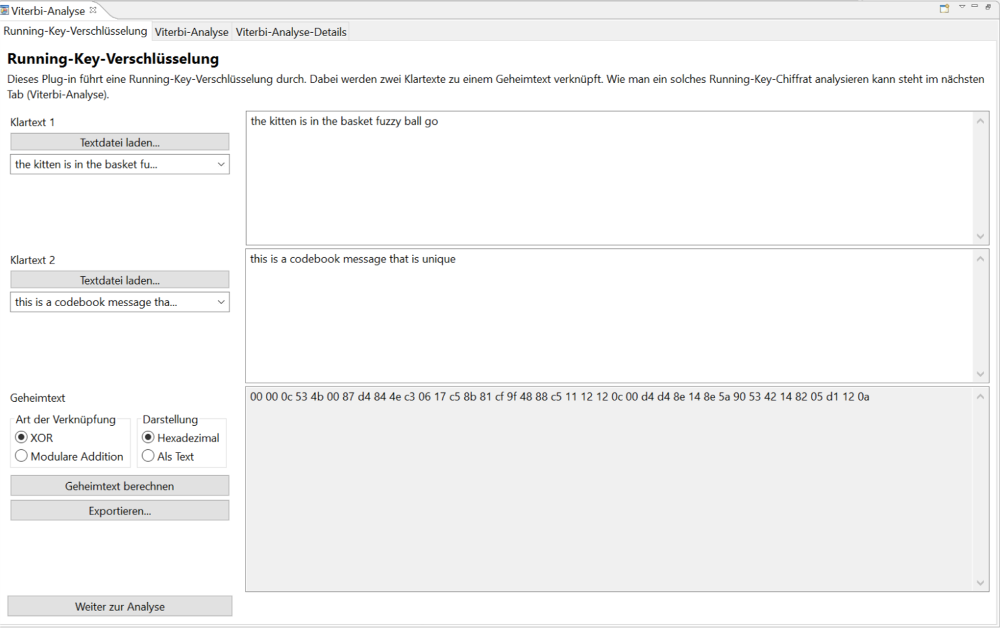
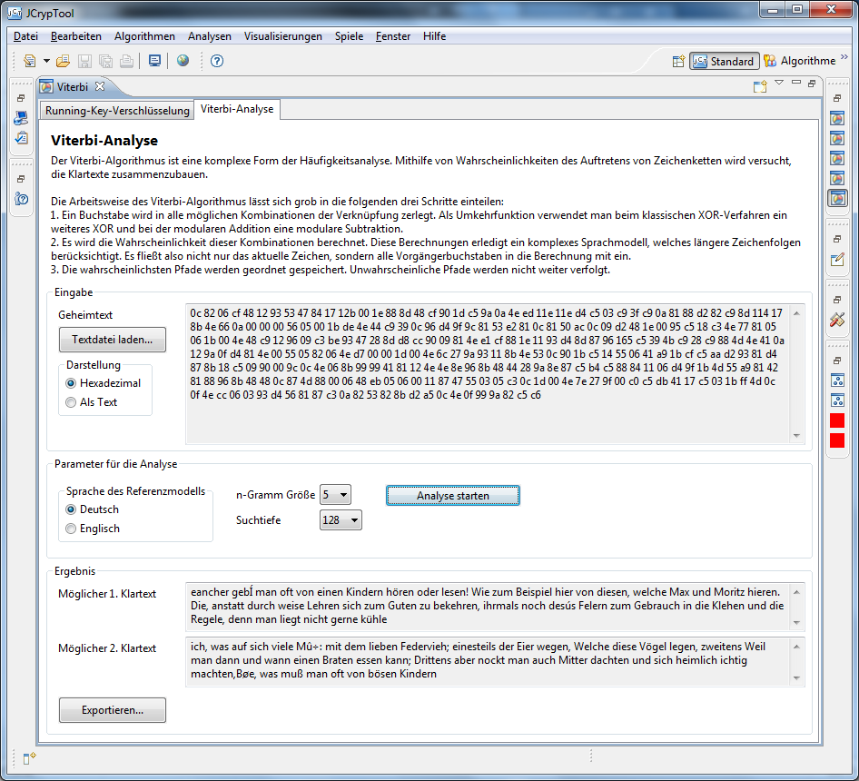
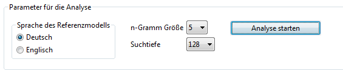
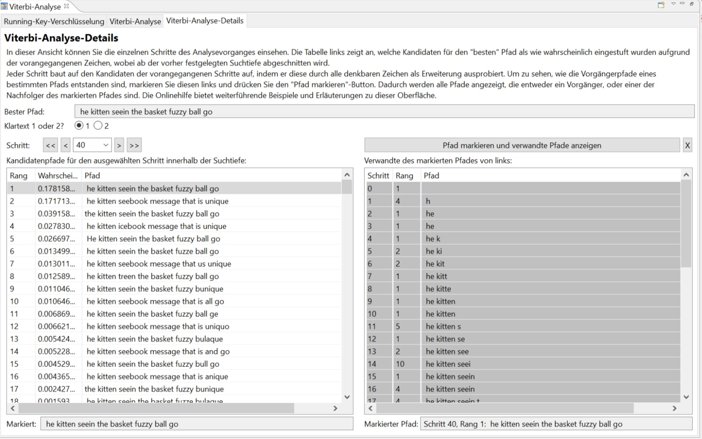
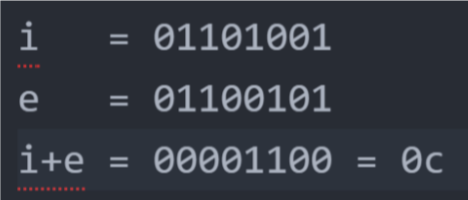
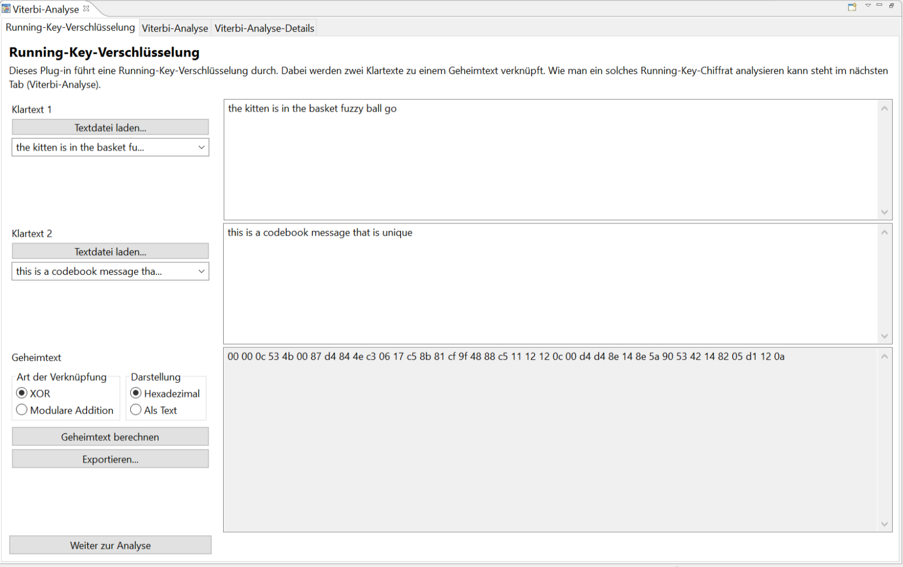
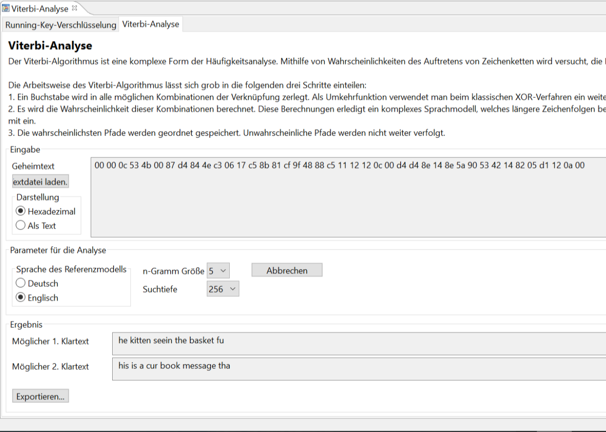
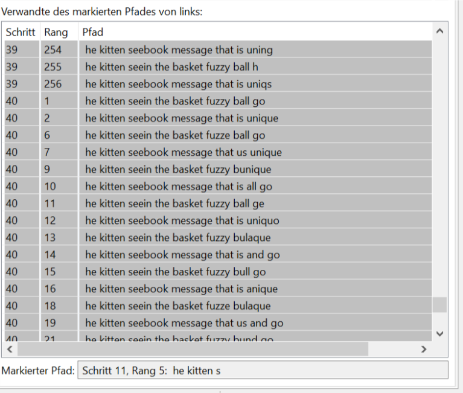
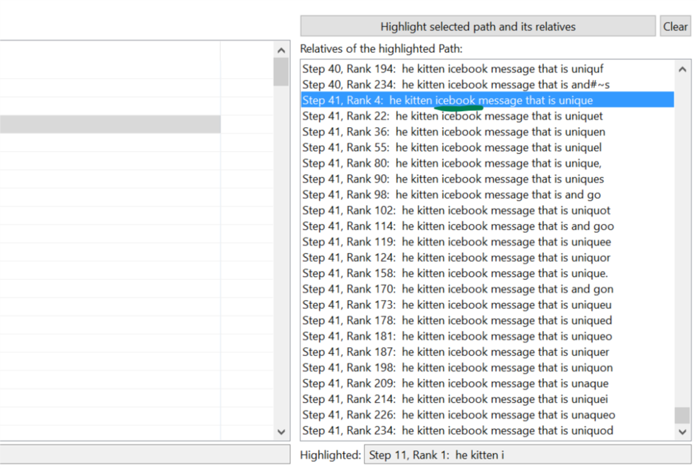

Der Viterbi-Algorithmus dient Angriffen auf die Running-Key-Verschlüsselung [1] im Ciphertext-only-Modus.
Die Running-Key-Verschlüsselung kombiniert die Einzelzeichen von zwei Klartexten mittels XOR oder modularer Addition.
Man kann – wie bei einer Buchchiffre – den einen Klartext als Schlüsselstrom (hergeleitet aus dem Passwort) betrachten, und den anderen Klartext als zu verschlüsselnde Nachricht. Das Passwort sollte mindestens so lang sein wie die Nachricht (ansonsten wird es zyklisch wiederholt). Wenn die Nachricht \(n\) Zeichen lang ist, hat die Running-Key-Verschlüsselung \(2 \cdot n\) Zeichen als Input (Nachricht und Schlüssel). Als Output erhält man ein Chiffrat der Länge \(n\).
Wenn einer der beiden Klartexte bekannt ist, kann man den anderen ganz leicht und direkt finden. In dem Szenario hier ist jedoch nur der Geheimtext bekannt, und die Viterbi-Analyse generiert die doppelte Menge Klartext (Nachricht und Schlüssel) mit erstaunlicher Treffsicherheit (aber nur, wenn der Schlüsselstrom nicht zufällig, sondern eben normaler Text ist). Der Viterbi-Algorithmus basiert auf der Annahme, dass die Klartexte ähnliche Muster wie normale Bücher aufweisen. Das zugrunde liegende Hidden-Markov-Modell [2] nutzt die Häufigkeitsanalyse von Zeichenfolgen. Die Implementierung basiert auf der Arbeit von M. Ekerå und B. Terelius [3].
Der Viterbi-Algorithmus ist deterministisch, d. h. jede Analyse läuft exakt gleich unter denselben Eingabeparametern. Es ist keine heuristische Abbruchbedingung vorgesehen. Das Ergebnis jeder Iteration des Algorithmus bedingt das Ergebnis der nächsten Iteration, unter Beachtung der Markov-Ordnung (bzw \(n\)-Gramm-Länge). Eine kleinere Ordnung bedeutet schnelleres "Verschwinden" dieser Abhängigkeiten.
Im Folgenden werden die 3 Reiter des Benutzerinterfaces erklärt, und dann wird das Vorgehen anhand eines Beispiels schrittweise erläutert. Am Ende gibt es FAQs, Ideen zur Weiterentwicklung des Plugins und Referenzen zum Verfahren.

Zuerst muss man den Geheimtext erzeugen. Dazu bietet der Reiter "Running-Key-Verschlüsselung" Methoden zum Kombinieren von zwei Klartexten. Die Klartexte können entweder manuell eingegeben oder aus Textdateien geladen werden.
Der Geheimtext kann entweder durch XOR oder durch modulare Addition erzeugt werden. Durch das Drücken des Buttons "Geheimtext berechnen" wird der Geheimtext erzeugt. Weil dieser oft nicht-druckbare Zeichen enthält, wird er per Default in hexadezimaler Form angezeigt. Der Button "Weiter zur Analyse" überträgt den Geheimtext in den zweiten Reiter.
Falls das Plugin rein zur Verschlüsselung verwendet werden soll (was natürlich nicht empfohlen ist), kann der Geheimtext mit dem "Exportieren"-Button in eine Textdatei geschrieben werden (diese enthält dann die Hexzeichen wie hier angezeigt).
Bei einer Buchchiffre dient das Passwort zum Finden der Stelle im Buch, die dann als Schlüsselstrom genommen wird. Nutzt man als Schlüsselstrom stattdessen eine wirklich zufällige Zeichenfolge, wird die Running-Key-Verschlüsselung zum One-Time-Pad (OTP) und kann mit den statistischen Methoden der Viterbi-Analyse nicht geknackt werden.

Der zweite Reiter beschäftigt sich mit dem eigentlichen Angriff. Wurde der Geheimtext mit dem ersten Reiter erzeugt, konnte man den Geheimtext von dort aus automatisch hierher laden. Alternativ kann der zu analysierende Geheimtext auch aus einer Textdatei geladen werden.

Weil die Analyse stark vom Sprachmodell abhängt, ist es wichtig, die erwartete Sprache der Klartexte vor dem Beginn der Analyse korrekt zu wählen. Der Parameter "N-Gramm-Größe" definiert die maximale Länge der analysierten Zeichenfolgen. Momentan kann man nur N-Gramme der Länge 1-5 auswählen (diese sind als vorberechnete Tabellen abgespeichert), um Speicherplatz zu sparen. Der Parameter "Suchtiefe" beeinflusst die Qualität der Ergebnisse: Ein hoher Wert erzeugt bessere Ergebnisse, verschlechtert jedoch die Performance. Um die Ergebnisse angezeigt zu bekommen, muss man den Button "Analyse starten" drücken. Die Ergebnisse mit den entschlüsselten Klartexten können wiederum in Textdateien exportiert werden.
Durch Drücken des Buttons "Analysedetails anzeigen" (er wird erst nach Abschluss der Analyse aktiv) können Details der Analyse im dritten Reiter eingesehen werden.

Im Reiter "Viterbi-Analyse-Details" können alle Schritte des Viterbi-Algorithmus inspiziert werden. Dabei wird für jeden Schritt auf der linken Seite eine Tabelle der Pfad-Kandidaten angezeigt, nach absteigender (pro Schritt relativer) Wahrscheinlichkeit. Da jeder Schritt einem Zeichen des Geheimtext entspricht, kann man so beobachten, wie die Kandidatenpfade Zeichen für Zeichen entstehen. Zum Beispiel kann man für den "Gewinner", d. h. den obersten Pfad im letzten Schritt, der auch der angezeigten Lösung entspricht, im vorigen Schritt nachsehen, welcher Kandidat denselben Beginn hat wie der "Gewinner", und das iterativ, um so den Kandidaten und seine Vorgänger in der Menge aller Mitbewerber auszumachen und zurück zu verfolgen.
Ein mächtiges Werkzeug dafür ist das Auswählen eines spezifischen Pfades zur Zurück- und Vorwärtsverfolgung. Für einen ausgewählten Pfad werden alle "Geschwister" bestimmt. Ein Geschwisterpfad hat entweder dieselbe Zeichenfolge wie der Beginn des ausgewählten Pfades oder umgekehrt: Der ausgewählte Pfad hat dieselbe Zeichenfolge wie der Geschwisterpfad. Das bedeutet eine Rückverfolgung des ausgewählten Pfades durch frühere Schritte (ausgewählter Pfad ist durch Anhängen neuer Zeichen an Schwesterpfad entstanden) oder in die "Zukunft": Es werden ebenfalls alle Schwesterpfade in späteren Schritten angezeigt, die vom ausgewählten Pfad abgeleitet sind. Im Kontext des folgenden Beispiels sieht man etwas besser was gemeint ist.
Im folgenden wird Text 1 als
"the kitten is in the basket fuzzy ball go"
angenommen, und Text 2 als
"this is a codebook message that is unique".
Wir nutzen die XOR-Methode.
Wie man sehen kann, sind die beiden ersten Buchstaben der Klartexte ("th") genau gleich. Dementsprechend wird bei der XOR-Verschlüsselung für beide Positionen der Wert "00" berechnet.

Für die 3. Position des Geheimtextes werden "e" und "i" kombiniert. Hieraus ergibt sich der Wert "0c". Analog werden die darauf folgenden Stellen berechnet.

Nach Wechseln in den Analyse-Reiter wählen wir die bestmöglichen Einstellungen und klicken den Button "Analyse starten".

Diskussion: Aufgrund der erwähnten Schwächen des Algorithmus am Textanfang findet die Analyse das Wort "the" des ersten Klartextes nicht. Wegen der zwei führenden Nullstellen in der Chiffre wird anscheinend ein Raten auf häufigen Buchstaben begünstigt, wovon das Leerzeichen eines ist. Es folgen weitere Fehler; die Essenz der Texte ist jedoch zu erraten.
Die Berechnung der Klartextpfade können wir, wie bereits beschrieben, im Reiter Analyse-Details zurückverfolgen. Dahin gelangt man durch Drücken des Buttons "Analysedetails anzeigen". Dieser Button wird aktiv, nachdem die Analyse fertig ist.
Durch Auswählen und Festlegen des "Gewinner"-Pfades, an Position 1 im Ranking im letzten Schritt, bekommen wir die Historie seiner Geschwisterpfade in den vergangenen Schritten. Da wir den Gewinnerkandidaten im letzten Schritt auswählen, kann man auch Vorgängerpfade sagen. So sieht das Programm nach Auswählen und Festlegen des Gewinnerpfades (Button "Pfad markieren und verwandte Pfade anzeigen" auf der rechten Seite) aus:
Der gefundene Text "he kitten *s*eein the basket fuzzy ball go" weicht ab der 11. Stelle, also dem 11. Buchstaben ("s") vom Originaltext "the kitten is in the basket fuzzy ball go" ab: Ab da steht "seein" statt "is in".
Die Tabelle links zeigt die Kandidaten des (derzeit ausgewählten) letzten Schrittes an. Wir haben den Gewinner, Nummer 1, ausgewählt. Durch Markieren dieses Pfades werden alle Pfade die Vorgänger dieses Gewinnerpfades sind markiert (es werden auch Nachfolger aufgelistet, doch wir sind schon im letzten Schritt). Wenn wir diese Liste betrachten, so wird offensichtlich, dass der Gewinnerpfad nicht in allen Schritten des Algorithmus erste Wahl war, es gibt zahlreiche "schlechte" Platzierungen!
Wir klicken nun in der Tabelle rechts auf den Vorgänger des Gewinners aus Schritt 11, wo wir die Entscheidungsfindung bezüglich der genannten Kuriosität beim Entziffern beobachten: Wir erwarten ein "i" (aus "is in"), der Algorithmus entscheidet sich aber für "s" (aus "seein").

Dieser Vorgänger mit letztem Zeichen "e" ist nur an der 5. Stelle! Rang 1 hat das "i" von "is in", das wir erwartet haben!
Das bedeutet, die Nachfolger der "s"-Option haben im weiteren Verlauf (Schritt 12 bereits) das vortrainierte Sprachmodell "Englisch" im Rahmen der \(n\)-Gramm-Fenster der Breite 5 mehr überzeugen können als alles was mit "i" beginnt, was ja im lokalen Rahmen ("is in" versus "seein") durchaus erst einmal Sinn ergibt. Auch Klartext 2 muss sinnvolle 5-Gramme haben. Die Wahl "seein" vs. "is in" ist also auch noch davon abhängig.
Dazu kann man sich über den anderen Radiobutton oben ("2" statt "1") ein Bild machen (der Einfachheit halber schauen wir uns das hier erst einmal nicht an).
Um zu schließen, vergleichen wir diese "Kontrahenten", Pfad "11-i" (korrekt) versus Pfad "11-s" in Hinsicht auf ihren weiteren Werdegang. Es folgen die "Nachfolger" dieser "11-i" und "11-s" mit kurzen Erläuterungen. Diese Listen erhält man, indem man die jeweiligen Kandidaten links auswählt und rechts per Button markiert. Nach einer Berechnung, die länger dauern kann, werden die Geschwister dieser 11.-Schritt-Kandidaten angezeigt – also Vorgänger und alle möglichen Nachfolger. Wir wissen bereits, dass "11-e" als Nachfolger den "Gewinnerpfad" hat:

Was passierte mit "11-i"? Hier sind dessen Nachfolger:

Wie es aussieht, konnte sich keine andere Kombination als "icebook", die mit "i" an Stelle 11 beginnt, durchsetzen. Da der Algorithmus ab einer bestimmten Suchtiefe (einstellbar) Kandidatenpfade verwirft (d.h. spätere Schritte können nicht daran anknüpfen), ist es nicht gesagt, dass ein Kandidat Nachfolger hat, die bis in den letzten Schritt reichen.
Das Durchforsten der Stacks, die mit diesem "i" zusammenhängen, sei dem geneigten Leser überlassen. Es ist oftmals hilfreich, auch die andere Klartext-Variante zu betrachten an Stellen, die unintuitiv erscheinen.
Die Analyse kann nicht perfekt sein, da ab einem bestimmten Punkt die Tabelle links bei jedem Schritt "abgeschnitten" wird; alles darunter steht dem nachfolgenden Schritt nicht zur Verfügung. Das Abschneiden ist aus Performancegründen nötig.
Die verwendeten Texte sind als Klartext-Vorlagen im Programm eingespeichert. Fröhliches Ausprobieren!
Die Analyse stellt Hypothesen über die Eingaben der XORs im Verschlüsselungsschritt auf. XOR ist kommutativ, d. h. es ist egal, ob a XOR b oder b XOR a. Daher muss Viterbi darauf zählen, dass die Vorgänger des Zeichens, über dessen Entstehung hypothetisiert wird, dies in Kontext setzen, und es wahrscheinlicher dastehen lassen, in welcher Reihenfolge geXORt wurde. Zu Beginn der Analyse gibt es aber keinen historischen Kontext, deshalb wird praktisch geraten was Klartext 1 und was Klartext 2 ist.
Hier ebenfalls greift die Erklärung von oben. Manchmal kommt der Algorithmus an eine Stelle, an der die historischen Kontexte der Kandidatenpfade (Vorgänger-\(n\)-Gramme) konvergieren (annähernd gleiches Muster oder gar Zeichen). In diesem Fall ist der historische Kontext wiederum wertlos, und der Algorithmus muss raten, welchem Klartext er welche XOR-Eingabe-Hypothese zuordnet.
Sonderzeichen sind durch das Sprachmodell berücksichtigt, haben aber kleine Auftretenswahrscheinlichkeiten. In dieser Hinsicht unterscheidet sich ein "y" kaum von einem Komma o.ä. Für den Viterbi-Algorithmus zählt bloß die relative Häufigkeit eines Zeichens zu seinem historischen \(n\)-Gramm-Kontext.
Momentan müssen beide Klartexte aus derselben Sprache stammen, damit die Analyse richtig funktioniert.
Bei der Analyse ist der Anfang der gefundenen Klartexte normalerweise deutlich fehlerhafter als der Rest. Das liegt daran, dass hier die Vorgänger der ersten paar Buchstaben fehlen. Dieser anfängliche Fehler nimmt mit fortschreitender Analyse an Einfluss ab.
[1] Running-Key-Verschlüsselung bei Wikipedia (englisch): http://en.wikipedia.org/wiki/Running_key_cipher
[2] Hidden-Markov-Modell bei Wikipedia: https://de.wikipedia.org/wiki/Hidden_Markov_Model
[3] M. Ekerå und B. Terelius. "Automatic solution in depth of one time pads". Royal Institute of Technology, Stockholm, Sweden. März 2008. http://www.csc.kth.se/utbildning/kth/kurser/DD2449/krypto09/pdf/rapport_vernam080309.pdf.
[4] Sravana Reddy und Kevin Knight. Decoding running key ciphers. ACL '12 Proceedings of the 50th Annual Meeting of the Association for Computational Linguistics: Short Papers – Volume 2. 2012.